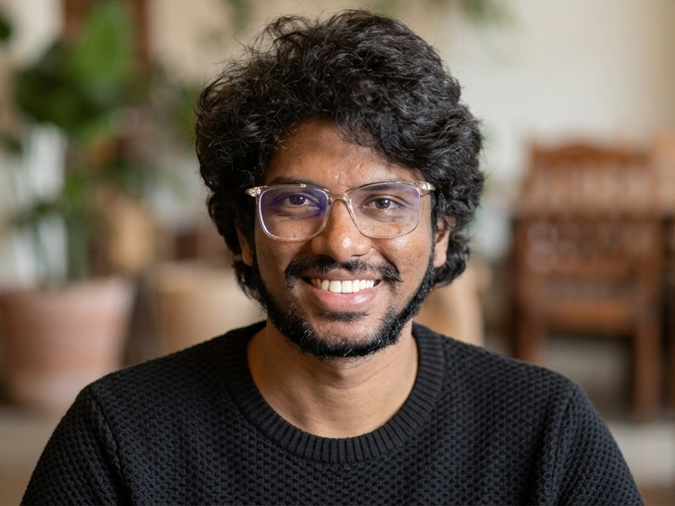
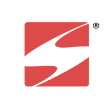
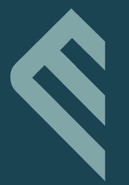
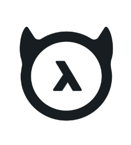

Director, Web & Digital with 13+ years building full stack applications, GTM, data infrastructure, and digital strategy across AI-native, fintech, and enterprise teams. I've led 0-to-1 journeys at startups and helped modernise and transform tech at large enterprises. With an M.S. in Info Security, I bring a security-first mindset to architecture, data, and operations, keeping everything reliable.


